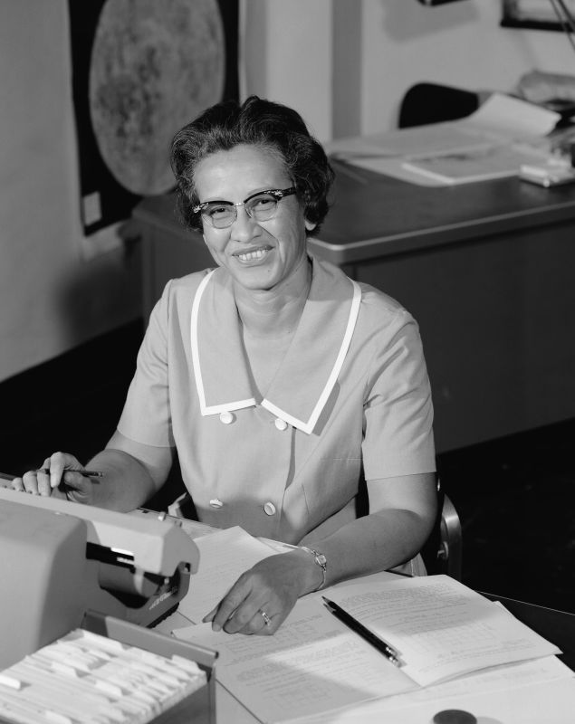

Katherine Johnson - Mathematician and Computer Scientist

Summary
Katherine Johnson was a Mathematician noted for her historical contributions to the early US space program. She was
highly skilled in the area of orbital mechanics.
Childhood
Born: Katherine Coleman on August 26, 1918 in White Sulphur Springs,
West Virginia
As a child Johnson had an intense curiosity and natural talent with numbers.
Education
Graduated from high school at age 14
Graudated from West Virginia State, summa cum laude in 1937 with
degrees in mathematics and French
Attended graduate school at West Virginia University in Morgantown,
West Virginia
Earned a PHD mathematics
Career
Started teaching in Marion, Virgina in 1937
Accepted a job offer at NACA (National Advisory Committe for
Aeronatics) in June of 1953
Johnson worked as an aerospace technologist at NASA.
Calculated the trajectory for the May 5, 1961 flight of Alan Shepard,
the first American in space in addition to the launch window for his Mercury mission.
Worked on the calcuation necessary to sync Apollo's Lunar Module with the lunar-orbiting Command and Service
Module.
Honors
Presidential Medal of Freedom on 2015
Received the Cogressional Gold Medal on November 8, 2019
Inducted into the Women's National Hall of Fame 2021